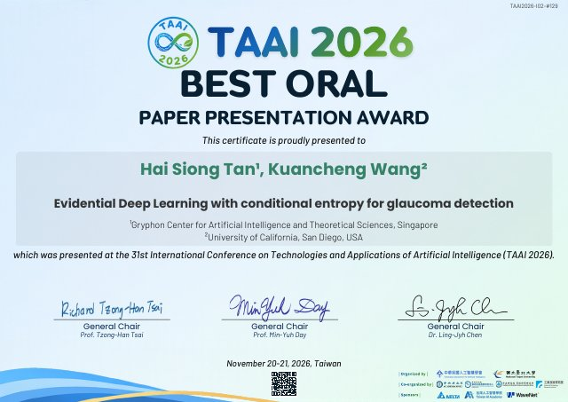
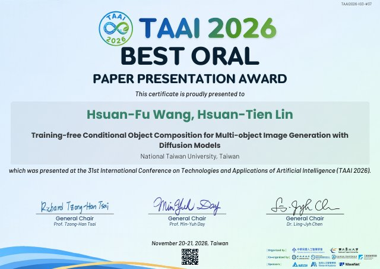
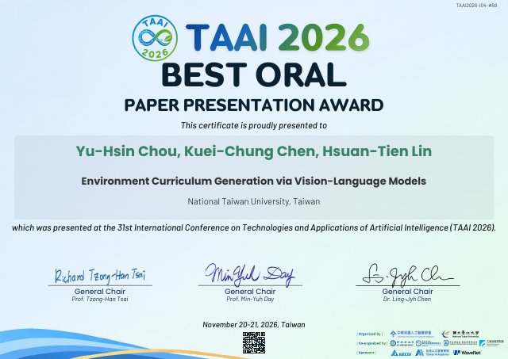

找不到符合的證書。請確認論文編號或姓名寫法，或來信 taai2026org@gmail.com。


Evidential Deep Learning with conditional entropy for glaucoma detection

Training-free Conditional Object Composition for Multi-object Image Generation with Diffusion Models

Environment Curriculum Generation via Vision-Language Models


Calibrated Hierarchical Structured Decisions for SASB Compliance Evidence in Sustainability Reports

最佳論文獎、最佳學生論文獎與最佳產業論文獎於歡迎晚宴中頒發（第 1 天 11 月 20 日（五）18:00–20:00）；最佳口頭論文發表獎與最佳海報論文發表獎於閉幕典禮與頒獎頒發（第 2 天 11 月 21 日（六）16:30–17:00）。歡迎晚宴於 1F 麗池廳舉行，閉幕典禮與頒獎於大會廳（5F 麗山廳）舉行。詳見TAAI 2026 論文獎項。紙本獎狀僅於頒獎典禮現場頒發給上台領獎的得獎者，未出席者恕不補發；所有得獎論文皆提供電子證書，請見 Q3 與 Q4。
最佳口頭論文發表獎與最佳海報論文發表獎，由場次主持人與評審委員會於場次中評選，考量發表內容、表達的清晰度與問答表現（海報論文以巡場時的 3 分鐘報告為準）。論文須於排定的場次親自現場發表，才列入評選。得獎者於閉幕典禮與頒獎公布；紙本獎狀僅於典禮現場頒發，未出席者恕不補發，建議候選人出席。
每篇得獎論文都有專屬的證書頁，網址永久不變：請至TAAI 2026 論文獎項證書，或點選論文獎項中各得獎論文旁的「🎓 證書」。證書頁可預覽證書、下載單張 PDF、加入 LinkedIn 或分享連結。每篇得獎論文頒發一張證書，列出全體作者，每位共同作者都可自行下載。證書頁即為 TAAI 2026 的官方證書紀錄，證書上的 QR Code 也會連到該頁，方便查核。紙本獎狀的規定請見 Q4。
紙本獎狀僅於頒獎典禮現場頒發給上台領獎的得獎者；未出席頒獎典禮或未上台領獎者，恕不補發紙本獎狀。大會提供電子證書：請至TAAI 2026 論文獎項證書，於各得獎論文的官方證書頁預覽與下載 PDF 證書。電子證書列出全體作者，證書上的 QR Code 會連到官方證書頁，可供查核。